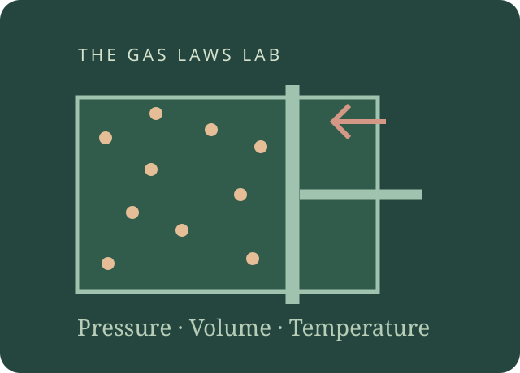

A gas consists of particles moving in many directions. Pressure describes force per area arising from interactions with a boundary; volume is the space occupied; temperature on the kelvin scale relates to mean particle kinetic energy. These are different quantities, so choose the variables and the conditions before naming a gas law.
For a fixed amount of ideal gas, keeping temperature constant gives Boyle’s inverse pressure–volume relationship. Keeping pressure constant gives Charles’s direct volume–temperature relationship. Keeping volume constant gives the pressure law, relating absolute pressure to absolute temperature. Use kelvin for temperature ratios and absolute pressure, not a gauge reading. Real gases can depart from the ideal model.
A sealed syringe compressed slowly can approximate Boyle’s law if heat exchange keeps temperature nearly constant. A tyre warmed at nearly fixed volume can show higher pressure. A flexible balloon may expand when warmed, but rubber tension, changing gas amount or water vapour can make the simple model less accurate.

Read and explain. Learn the vocabulary and say why the process works.
Work through an example. Identify the known information, rule and result.
Investigate, then apply. Return to the practical, game or revision simulator.
Read the symbols and units
Use this reference whenever a letter, subscript or unit in an example is new to you. A subscript is a smaller label, such as ₁ for the first state; an exponent is a power, such as ² for a square.
01
Temperature heat and Kelvin
Understand the ideas
Heat is energy transferred from a hotter body to a colder body because their temperatures differ.
Heat is an energy transfer, so it is measured in joules. Kelvin and Celsius measure temperature.
Kelvin temperature is proportional to the mean translational kinetic energy of ideal-gas particles.
The temperature difference determines the spontaneous direction of heat transfer.
T(K) = temperature(°C) + 273.15, so 27 + 273.15 = 300.15 K.
Subtract 273.15: 300 − 273.15 = 26.85°C.
Only Kelvin ratios describe changes in absolute temperature. 20°C to 40°C is about 293 K to 313 K, not a doubling.
Absolute zero is the lower limit of thermodynamic temperature, not the freezing point of water.
Mean translational kinetic energy is proportional to Kelvin temperature.
Real gases can depart from the ideal-gas model, especially near changes of state. A backwards line is not a measurement made at 0 K.
Follow the worked examples
Try to explain the example first, then open it to compare your reasoning.
Worked example · Which quantity describes thermal energy transferred because of a temperature difference?
Result: Heat
Reasoning: Heat is energy transferred from a hotter body to a colder body because their temperatures differ.
Explain the reasoning in your own words, then compare it with the practical model. For a calculation, identify the known quantities and units before choosing the rule.
Worked example · Which is a unit of heat transferred?
Result: Joule (J)
Reasoning: Heat is an energy transfer, so it is measured in joules. Kelvin and Celsius measure temperature.
Explain the reasoning in your own words, then compare it with the practical model. For a calculation, identify the known quantities and units before choosing the rule.
Worked example · For an ideal gas, a higher Kelvin temperature means a higher average…
Result: translational kinetic energy per particle
Reasoning: Kelvin temperature is proportional to the mean translational kinetic energy of ideal-gas particles.
Explain the reasoning in your own words, then compare it with the practical model. For a calculation, identify the known quantities and units before choosing the rule.
Worked example · Thermal energy transfers spontaneously between two touching bodies in which direction?
Result: From higher temperature to lower temperature
Reasoning: The temperature difference determines the spontaneous direction of heat transfer.
Explain the reasoning in your own words, then compare it with the practical model. For a calculation, identify the known quantities and units before choosing the rule.
Worked example · Convert 27°C to Kelvin using 273.15.
Result: 300.15 K
Reasoning: T(K) = temperature(°C) + 273.15, so 27 + 273.15 = 300.15 K.
Explain the reasoning in your own words, then compare it with the practical model. For a calculation, identify the known quantities and units before choosing the rule.
Explain the reasoning in your own words, then compare it with the practical model. For a calculation, identify the known quantities and units before choosing the rule.
Worked example · Which change doubles absolute temperature?
Result: 300 K to 600 K
Reasoning: Only Kelvin ratios describe changes in absolute temperature. 20°C to 40°C is about 293 K to 313 K, not a doubling.
Explain the reasoning in your own words, then compare it with the practical model. For a calculation, identify the known quantities and units before choosing the rule.
Worked example · Absolute zero corresponds to which temperature?
Result: 0 K, or −273.15°C
Reasoning: Absolute zero is the lower limit of thermodynamic temperature, not the freezing point of water.
Explain the reasoning in your own words, then compare it with the practical model. For a calculation, identify the known quantities and units before choosing the rule.
Worked example · An ideal gas is heated from 200 K to 400 K. What happens to its mean translational kinetic energy?
Result: It doubles
Reasoning: Mean translational kinetic energy is proportional to Kelvin temperature.
Explain the reasoning in your own words, then compare it with the practical model. For a calculation, identify the known quantities and units before choosing the rule.
Worked example · Which statement about extrapolating gas graphs toward 0 K is most accurate?
Result: It is an ideal-model extrapolation; a real gas may condense before reaching very low temperatures
Reasoning: Real gases can depart from the ideal-gas model, especially near changes of state. A backwards line is not a measurement made at 0 K.
Explain the reasoning in your own words, then compare it with the practical model. For a calculation, identify the known quantities and units before choosing the rule.
02
Changes of state and thermal expansion
Understand the ideas
Evaporation occurs at the surface and can happen below the boiling point.
Boiling occurs throughout the liquid at its boiling temperature for the prevailing pressure.
Cooling water vapour can lead to condensation into liquid droplets.
Sublimation is a direct solid-to-gas change.
Water boils at about 100°C near standard atmospheric pressure. Its boiling temperature changes when pressure changes.
During the phase change, supplied energy changes the arrangement/interactions of particles instead of raising temperature.
Gas and liquid may coexist while energy leaves during condensation.
Heating can increase average particle separation. The individual molecules do not expand like balloons.
Cooling lowers Kelvin temperature; a flexible gas container can contract. A balloon is only approximate because its rubber affects pressure.
Changes-of-state temperatures depend on substance, purity and pressure.
Follow the worked examples
Try to explain the example first, then open it to compare your reasoning.
Worked example · What is the change from liquid to gas at the surface of a liquid called?
Result: Evaporation
Reasoning: Evaporation occurs at the surface and can happen below the boiling point.
Explain the reasoning in your own words, then compare it with the practical model. For a calculation, identify the known quantities and units before choosing the rule.
Worked example · Which statement distinguishes boiling from evaporation?
Result: Boiling forms vapour bubbles throughout the liquid; evaporation occurs at its surface
Reasoning: Boiling occurs throughout the liquid at its boiling temperature for the prevailing pressure.
Explain the reasoning in your own words, then compare it with the practical model. For a calculation, identify the known quantities and units before choosing the rule.
Worked example · What is condensation?
Result: Gas changing into liquid
Reasoning: Cooling water vapour can lead to condensation into liquid droplets.
Explain the reasoning in your own words, then compare it with the practical model. For a calculation, identify the known quantities and units before choosing the rule.
Worked example · Dry ice changes directly from solid to gas. What is this called?
Result: Sublimation
Reasoning: Sublimation is a direct solid-to-gas change.
Explain the reasoning in your own words, then compare it with the practical model. For a calculation, identify the known quantities and units before choosing the rule.
Worked example · At ordinary atmospheric pressure of about 101 kPa, pure water boils at approximately…
Result: 100°C
Reasoning: Water boils at about 100°C near standard atmospheric pressure. Its boiling temperature changes when pressure changes.
Explain the reasoning in your own words, then compare it with the practical model. For a calculation, identify the known quantities and units before choosing the rule.
Worked example · During the melting plateau of a pure substance heated steadily at constant pressure, why does temperature remain nearly constant?
Result: Energy is used in the phase change rather than raising the mean kinetic energy
Reasoning: During the phase change, supplied energy changes the arrangement/interactions of particles instead of raising temperature.
Explain the reasoning in your own words, then compare it with the practical model. For a calculation, identify the known quantities and units before choosing the rule.
Worked example · A cooling curve has a flat section while a pure gas becomes liquid at constant pressure. Which change is occurring?
Result: Condensation
Reasoning: Gas and liquid may coexist while energy leaves during condensation.
Explain the reasoning in your own words, then compare it with the practical model. For a calculation, identify the known quantities and units before choosing the rule.
Worked example · Which statement best describes thermal expansion?
Result: Particle separations usually increase; the particles themselves do not simply swell
Reasoning: Heating can increase average particle separation. The individual molecules do not expand like balloons.
Explain the reasoning in your own words, then compare it with the practical model. For a calculation, identify the known quantities and units before choosing the rule.
Worked example · A sealed balloon is cooled while outside pressure stays approximately constant. What usually happens to its volume?
Result: It decreases
Reasoning: Cooling lowers Kelvin temperature; a flexible gas container can contract. A balloon is only approximate because its rubber affects pressure.
Explain the reasoning in your own words, then compare it with the practical model. For a calculation, identify the known quantities and units before choosing the rule.
Worked example · Which point is essential when comparing melting or boiling temperatures?
Result: State the external pressure and whether the substance is pure
Reasoning: Changes-of-state temperatures depend on substance, purity and pressure.
Explain the reasoning in your own words, then compare it with the practical model. For a calculation, identify the known quantities and units before choosing the rule.
03
Pressure force and units
Understand the ideas
P = F/A: pressure is force per unit area.
The SI pressure unit is the pascal, one newton per square metre.
P = F/A; pressure increases when the same force acts over less area.
For the same weight, a larger supporting area means lower pressure.
500 ÷ 20 = 25 N/cm². This is the worked pressure example in the presentation.
P = 600/0.03 = 20,000 N/m² = 20,000 Pa.
Divide pascals by 1000 to obtain kilopascals.
1 dm³ = 1000 cm³, so 2.5 dm³ = 2500 cm³.
This course uses 0°C (273.15 K) and 100 kPa as its standard reference.
Gas-law equations require absolute pressure. Gauge pressure is relative to the atmosphere.
Follow the worked examples
Try to explain the example first, then open it to compare your reasoning.
Worked example · Pressure is defined as…
Result: force divided by contact area
Reasoning: P = F/A: pressure is force per unit area.
Explain the reasoning in your own words, then compare it with the practical model. For a calculation, identify the known quantities and units before choosing the rule.
Worked example · One pascal is equivalent to…
Result: 1 N/m²
Reasoning: The SI pressure unit is the pascal, one newton per square metre.
Explain the reasoning in your own words, then compare it with the practical model. For a calculation, identify the known quantities and units before choosing the rule.
Worked example · For the same force, halving the contact area makes the pressure…
Result: twice as large
Reasoning: P = F/A; pressure increases when the same force acts over less area.
Explain the reasoning in your own words, then compare it with the practical model. For a calculation, identify the known quantities and units before choosing the rule.
Worked example · Why do skis help distribute a skier’s weight on soft snow?
Result: Their larger contact area reduces pressure
Reasoning: For the same weight, a larger supporting area means lower pressure.
Explain the reasoning in your own words, then compare it with the practical model. For a calculation, identify the known quantities and units before choosing the rule.
Worked example · A force of 500 N acts over 20 cm². What is the pressure in N/cm²?
Result: 25 N/cm²
Reasoning: 500 ÷ 20 = 25 N/cm². This is the worked pressure example in the presentation.
Explain the reasoning in your own words, then compare it with the practical model. For a calculation, identify the known quantities and units before choosing the rule.
Worked example · A force of 600 N acts over 0.03 m². What pressure is produced?
Result: 20,000 Pa
Reasoning: P = 600/0.03 = 20,000 N/m² = 20,000 Pa.
Explain the reasoning in your own words, then compare it with the practical model. For a calculation, identify the known quantities and units before choosing the rule.
Worked example · Convert 125,000 Pa to kPa.
Result: 125 kPa
Reasoning: Divide pascals by 1000 to obtain kilopascals.
Explain the reasoning in your own words, then compare it with the practical model. For a calculation, identify the known quantities and units before choosing the rule.
Explain the reasoning in your own words, then compare it with the practical model. For a calculation, identify the known quantities and units before choosing the rule.
Worked example · Which pair describes the STP convention used in your presentation?
Result: 273.15 K and 100 kPa
Reasoning: This course uses 0°C (273.15 K) and 100 kPa as its standard reference.
Explain the reasoning in your own words, then compare it with the practical model. For a calculation, identify the known quantities and units before choosing the rule.
Worked example · A tyre gauge measures pressure above atmospheric pressure. What pressure is used in gas-law ratios?
Result: Absolute pressure, including atmospheric pressure
Reasoning: Gas-law equations require absolute pressure. Gauge pressure is relative to the atmosphere.
Explain the reasoning in your own words, then compare it with the practical model. For a calculation, identify the known quantities and units before choosing the rule.
04
Boyle–Mariotte pressure and volume
Understand the ideas
For a fixed amount of gas at constant temperature, pressure is inversely proportional to volume.
Halving volume doubles pressure because PV remains constant.
The same particles have less space. At fixed temperature, mean kinetic energy stays constant.
The product of absolute pressure and gas volume is constant when temperature and amount are fixed.
Try to explain the example first, then open it to compare your reasoning.
Worked example · Which condition must be constant for Boyle–Mariotte’s law, besides the amount of gas?
Result: Temperature
Reasoning: For a fixed amount of gas at constant temperature, pressure is inversely proportional to volume.
Explain the reasoning in your own words, then compare it with the practical model. For a calculation, identify the known quantities and units before choosing the rule.
Worked example · At fixed temperature, a sealed sample is compressed from 100 mL to 50 mL. Its pressure…
Result: doubles
Reasoning: Halving volume doubles pressure because PV remains constant.
Explain the reasoning in your own words, then compare it with the practical model. For a calculation, identify the known quantities and units before choosing the rule.
Worked example · Why does compressing a sealed sample at constant temperature increase pressure?
Result: Particles collide with the walls more frequently in the smaller space
Reasoning: The same particles have less space. At fixed temperature, mean kinetic energy stays constant.
Explain the reasoning in your own words, then compare it with the practical model. For a calculation, identify the known quantities and units before choosing the rule.
Worked example · Which equation expresses Boyle–Mariotte’s law?
Result: P₁V₁ = P₂V₂
Reasoning: The product of absolute pressure and gas volume is constant when temperature and amount are fixed.
Explain the reasoning in your own words, then compare it with the practical model. For a calculation, identify the known quantities and units before choosing the rule.
Worked example · A gas occupies 100 cm³ at 100,000 Pa. It is compressed to 80 cm³ at constant temperature. Find its final pressure.
Explain the reasoning in your own words, then compare it with the practical model. For a calculation, identify the known quantities and units before choosing the rule.
Worked example · A fixed gas sample occupies 4.00 dm³ at 210 kPa. What pressure gives 2.50 dm³ at the same temperature?
Explain the reasoning in your own words, then compare it with the practical model. For a calculation, identify the known quantities and units before choosing the rule.
Worked example · If pressure rises from 100 kPa to 400 kPa at constant temperature, an initial volume of 8 L becomes…
Result: 2 L
Reasoning: Pressure becomes four times larger, so volume becomes one-quarter as large.
Explain the reasoning in your own words, then compare it with the practical model. For a calculation, identify the known quantities and units before choosing the rule.
Worked example · What does a graph of pressure against volume look like for Boyle–Mariotte’s law?
Result: A decreasing inverse curve
Reasoning: P is proportional to 1/V, so the P–V relationship is an inverse curve.
Explain the reasoning in your own words, then compare it with the practical model. For a calculation, identify the known quantities and units before choosing the rule.
Worked example · Which graph is linear through the origin for an ideal Boyle–Mariotte experiment?
Result: Pressure against 1/volume
Reasoning: Rearranging gives P = constant × (1/V).
Explain the reasoning in your own words, then compare it with the practical model. For a calculation, identify the known quantities and units before choosing the rule.
Worked example · Which procedure better approximates a constant-temperature syringe experiment?
Result: Compress slowly so thermal energy can be exchanged with the surroundings
Explain the reasoning in your own words, then compare it with the practical model. For a calculation, identify the known quantities and units before choosing the rule.
05
Charles volume and temperature
Understand the ideas
Volume is directly proportional to absolute temperature when pressure is constant.
The piston can move so that gas pressure balances a constant external load.
V/T remains constant, so doubling Kelvin temperature doubles volume.
V₂ = 22 × 320/280 = 25.142… L, which rounds to 25.1 L.
Convert to 313.15 K and 348.15 K: V₂ = 2.32 × 348.15/313.15 ≈ 2.58 dm³.
20°C and 40°C correspond to 293.15 K and 313.15 K, not a factor of two.
V₂ = 3 × 200/300 = 2 L.
V is directly proportional to T in the ideal-gas model.
Volume increases so the pressure can continue balancing the fixed external load.
Membrane tension affects internal pressure; a fixed-load piston is a closer constant-pressure model.
Follow the worked examples
Try to explain the example first, then open it to compare your reasoning.
Worked example · Charles’s law links which two quantities at fixed pressure and fixed gas amount?
Result: Volume and Kelvin temperature
Reasoning: Volume is directly proportional to absolute temperature when pressure is constant.
Explain the reasoning in your own words, then compare it with the practical model. For a calculation, identify the known quantities and units before choosing the rule.
Worked example · Which apparatus best represents Charles’s law?
Result: A gas cylinder with a freely moving piston under a fixed load
Reasoning: The piston can move so that gas pressure balances a constant external load.
Explain the reasoning in your own words, then compare it with the practical model. For a calculation, identify the known quantities and units before choosing the rule.
Worked example · A gas at constant pressure is warmed from 300 K to 600 K. What happens to its volume?
Result: It doubles
Reasoning: V/T remains constant, so doubling Kelvin temperature doubles volume.
Explain the reasoning in your own words, then compare it with the practical model. For a calculation, identify the known quantities and units before choosing the rule.
Worked example · A gas has volume 22 L at 280 K. At the same pressure, what is its volume at 320 K, to one decimal place?
Result: 25.1 L
Reasoning: V₂ = 22 × 320/280 = 25.142… L, which rounds to 25.1 L.
Explain the reasoning in your own words, then compare it with the practical model. For a calculation, identify the known quantities and units before choosing the rule.
Worked example · A gas occupies 2.32 dm³ at 40°C. It is heated to 75°C at constant pressure. What is its final volume, approximately?
Result: 2.58 dm³
Reasoning: Convert to 313.15 K and 348.15 K: V₂ = 2.32 × 348.15/313.15 ≈ 2.58 dm³.
Explain the reasoning in your own words, then compare it with the practical model. For a calculation, identify the known quantities and units before choosing the rule.
Worked example · Why is using 20°C to 40°C as a doubling in Charles’s law incorrect?
Result: The ratio must use absolute Kelvin temperatures
Reasoning: 20°C and 40°C correspond to 293.15 K and 313.15 K, not a factor of two.
Explain the reasoning in your own words, then compare it with the practical model. For a calculation, identify the known quantities and units before choosing the rule.
Worked example · A gas occupies 3 L at 300 K. What volume is predicted at 200 K with pressure constant?
Result: 2 L
Reasoning: V₂ = 3 × 200/300 = 2 L.
Explain the reasoning in your own words, then compare it with the practical model. For a calculation, identify the known quantities and units before choosing the rule.
Worked example · On a graph of volume against Kelvin temperature at fixed pressure, the ideal relationship is…
Result: a straight line extrapolating through the origin
Reasoning: V is directly proportional to T in the ideal-gas model.
Explain the reasoning in your own words, then compare it with the practical model. For a calculation, identify the known quantities and units before choosing the rule.
Worked example · Which gas property stays constant as a loaded piston moves outward in a Charles experiment?
Result: Pressure at equilibrium
Reasoning: Volume increases so the pressure can continue balancing the fixed external load.
Explain the reasoning in your own words, then compare it with the practical model. For a calculation, identify the known quantities and units before choosing the rule.
Worked example · Why is an ordinary balloon only an approximate Charles-law model?
Result: Its rubber membrane changes the pressure as it stretches
Reasoning: Membrane tension affects internal pressure; a fixed-load piston is a closer constant-pressure model.
Explain the reasoning in your own words, then compare it with the practical model. For a calculation, identify the known quantities and units before choosing the rule.
06
Gay-Lussac pressure and temperature
Understand the ideas
For a fixed amount of gas at constant volume, P is proportional to Kelvin T.
The temperature doubles at fixed volume and amount, so pressure doubles.
Heating raises mean kinetic energy; wall collisions create the pressure.
Pressure divided by Kelvin temperature stays constant for a fixed gas amount and volume.
Use 295.15 K and 333.15 K: P₂ = 3.20 × 333.15/295.15 ≈ 3.61 atm.
P₂ = 100 × 450/300 = 150 kPa.
Pressure changes in the same ratio as Kelvin temperature.
Absolute pressure is directly proportional to Kelvin temperature.
The Celsius-axis intercept corresponds to 0 K; it is an ideal-model extrapolation, not a real zero-pressure measurement.
The constraint determines whether thermal expansion appears mainly as changing volume or changing pressure.
Follow the worked examples
Try to explain the example first, then open it to compare your reasoning.
Worked example · Which conditions are fixed in the pressure–temperature law?
Result: Volume and amount of gas
Reasoning: For a fixed amount of gas at constant volume, P is proportional to Kelvin T.
Explain the reasoning in your own words, then compare it with the practical model. For a calculation, identify the known quantities and units before choosing the rule.
Worked example · Two identical sealed 2 L cylinders contain the same amount of gas at 400 K and 800 K. Which has greater pressure?
Result: The 800 K cylinder
Reasoning: The temperature doubles at fixed volume and amount, so pressure doubles.
Explain the reasoning in your own words, then compare it with the practical model. For a calculation, identify the known quantities and units before choosing the rule.
Worked example · How do particles explain higher pressure when a rigid sealed container is heated?
Result: They move faster and transfer more momentum in more frequent wall collisions
Reasoning: Heating raises mean kinetic energy; wall collisions create the pressure.
Explain the reasoning in your own words, then compare it with the practical model. For a calculation, identify the known quantities and units before choosing the rule.
Worked example · Which equation represents the constant-volume pressure law?
Result: P₁/T₁ = P₂/T₂
Reasoning: Pressure divided by Kelvin temperature stays constant for a fixed gas amount and volume.
Explain the reasoning in your own words, then compare it with the practical model. For a calculation, identify the known quantities and units before choosing the rule.
Worked example · A rigid tank contains gas at 3.20 atm and 22°C. At 60°C, its pressure is approximately…
Result: 3.61 atm
Reasoning: Use 295.15 K and 333.15 K: P₂ = 3.20 × 333.15/295.15 ≈ 3.61 atm.
Explain the reasoning in your own words, then compare it with the practical model. For a calculation, identify the known quantities and units before choosing the rule.
Worked example · A rigid container holds gas at 100 kPa and 300 K. What pressure is predicted at 450 K?
Result: 150 kPa
Reasoning: P₂ = 100 × 450/300 = 150 kPa.
Explain the reasoning in your own words, then compare it with the practical model. For a calculation, identify the known quantities and units before choosing the rule.
Worked example · At fixed volume, a gas is cooled from 400 K to 200 K. What happens to its pressure?
Result: It halves
Reasoning: Pressure changes in the same ratio as Kelvin temperature.
Explain the reasoning in your own words, then compare it with the practical model. For a calculation, identify the known quantities and units before choosing the rule.
Worked example · Which graph is expected for pressure against Kelvin temperature at constant volume?
Result: A straight line extrapolating through the origin
Reasoning: Absolute pressure is directly proportional to Kelvin temperature.
Explain the reasoning in your own words, then compare it with the practical model. For a calculation, identify the known quantities and units before choosing the rule.
Worked example · If the pressure–Celsius-temperature line is extended backwards in the ideal model, where does zero pressure occur?
Result: About −273.15°C
Reasoning: The Celsius-axis intercept corresponds to 0 K; it is an ideal-model extrapolation, not a real zero-pressure measurement.
Explain the reasoning in your own words, then compare it with the practical model. For a calculation, identify the known quantities and units before choosing the rule.
Worked example · Why can heating affect pressure differently in a rigid tank and a freely moving piston?
Result: The tank fixes volume; the loaded piston allows volume to change at approximately fixed pressure
Reasoning: The constraint determines whether thermal expansion appears mainly as changing volume or changing pressure.
Explain the reasoning in your own words, then compare it with the practical model. For a calculation, identify the known quantities and units before choosing the rule.
07
Combined law and ideal-gas calculations
Understand the ideas
The combined law compares states of the same amount of ideal gas.
From PV/T = constant, V is proportional to T/P, so equal doubling factors cancel.
The combined law reduces to Boyle–Mariotte when temperature is fixed.
Matching units allow like quantities to form meaningful ratios.
P is absolute pressure, V volume, n amount in moles, R the gas constant and T Kelvin temperature.
1 kPa·dm³ = 1 J. Pa with m³ and Kelvin is also consistent.
n = PV/(RT) = 200 × 10/(8.31 × 300) ≈ 0.80 mol.
1 m³ = 1000 dm³, so 0.025 × 1000 = 25 dm³.
V = nRT/P = 0.50 × 8.31 × 300/100 = 12.465 dm³.
Follow the worked examples
Try to explain the example first, then open it to compare your reasoning.
Worked example · Which quantity must remain fixed when applying the combined gas law P₁V₁/T₁ = P₂V₂/T₂?
Result: Amount of gas
Reasoning: The combined law compares states of the same amount of ideal gas.
Explain the reasoning in your own words, then compare it with the practical model. For a calculation, identify the known quantities and units before choosing the rule.
Worked example · Gas at 110 kPa, 30°C and 2.0 dm³ is changed to 440 kPa and 80°C. What is the new volume, approximately?
Explain the reasoning in your own words, then compare it with the practical model. For a calculation, identify the known quantities and units before choosing the rule.
Worked example · For a fixed gas amount, both pressure and Kelvin temperature double. What happens to volume?
Result: It stays the same
Reasoning: From PV/T = constant, V is proportional to T/P, so equal doubling factors cancel.
Explain the reasoning in your own words, then compare it with the practical model. For a calculation, identify the known quantities and units before choosing the rule.
Worked example · A fixed gas sample doubles its volume while its Kelvin temperature stays fixed. Which change is required?
Result: Pressure halves
Reasoning: The combined law reduces to Boyle–Mariotte when temperature is fixed.
Explain the reasoning in your own words, then compare it with the practical model. For a calculation, identify the known quantities and units before choosing the rule.
Worked example · When using the combined gas law, what is essential about the units in the two states?
Result: Use consistent pressure/volume units and Kelvin temperatures
Reasoning: Matching units allow like quantities to form meaningful ratios.
Explain the reasoning in your own words, then compare it with the practical model. For a calculation, identify the known quantities and units before choosing the rule.
Worked example · Which equation is the ideal gas equation?
Result: PV = nRT
Reasoning: P is absolute pressure, V volume, n amount in moles, R the gas constant and T Kelvin temperature.
Explain the reasoning in your own words, then compare it with the practical model. For a calculation, identify the known quantities and units before choosing the rule.
Worked example · Which unit combination is consistent with R = 8.31 J mol⁻¹ K⁻¹?
Result: P in kPa, V in dm³ and T in K
Reasoning: 1 kPa·dm³ = 1 J. Pa with m³ and Kelvin is also consistent.
Explain the reasoning in your own words, then compare it with the practical model. For a calculation, identify the known quantities and units before choosing the rule.
Worked example · Using PV = nRT, estimate n for gas at 200 kPa in 10 dm³ at 300 K, with R = 8.31.
Explain the reasoning in your own words, then compare it with the practical model. For a calculation, identify the known quantities and units before choosing the rule.
Worked example · Convert 0.025 m³ to dm³ before using kPa with R = 8.31.
Explain the reasoning in your own words, then compare it with the practical model. For a calculation, identify the known quantities and units before choosing the rule.
Worked example · An ideal gas has n = 0.50 mol, T = 300 K and P = 100 kPa. Find V using R = 8.31.
Explain the reasoning in your own words, then compare it with the practical model. For a calculation, identify the known quantities and units before choosing the rule.
08
Avogadro moles and gas volume
Understand the ideas
This is Avogadro’s principle. Different gases can have different masses per particle.
Avogadro’s law gives V proportional to n when P and T are fixed.
This convention gives a molar volume of about 22.7 dm³/mol; the standard pressure must be specified.
V = n × molar volume = 5 × 22.7 = 113.5 dm³.
n = volume/molar volume = 45.4/22.7 = 2.0 mol.
Equal gas volumes at equal P and T have equal particle numbers; molecular masses can differ.
n is amount of substance measured in moles.
Molar volume depends on the specified conditions, even for ideal gases.
0.25 × 22.7 = 5.675 dm³, about 5.68 dm³.
Heating changes energy and may change pressure or volume; it does not by itself change the number of gas particles.
Follow the worked examples
Try to explain the example first, then open it to compare your reasoning.
Worked example · Equal volumes of ideal gases at the same pressure and temperature contain equal…
Result: numbers of particles
Reasoning: This is Avogadro’s principle. Different gases can have different masses per particle.
Explain the reasoning in your own words, then compare it with the practical model. For a calculation, identify the known quantities and units before choosing the rule.
Worked example · At fixed pressure and temperature, doubling the amount of ideal gas makes its volume…
Result: twice as large
Reasoning: Avogadro’s law gives V proportional to n when P and T are fixed.
Explain the reasoning in your own words, then compare it with the practical model. For a calculation, identify the known quantities and units before choosing the rule.
Worked example · At the course STP of 273.15 K and 100 kPa, one mole of an ideal gas occupies approximately…
Result: 22.7 dm³
Reasoning: This convention gives a molar volume of about 22.7 dm³/mol; the standard pressure must be specified.
Explain the reasoning in your own words, then compare it with the practical model. For a calculation, identify the known quantities and units before choosing the rule.
Worked example · At STP (273.15 K and 100 kPa), what volume does 5 mol of ideal carbon dioxide occupy?
Result: 113.5 dm³
Reasoning: V = n × molar volume = 5 × 22.7 = 113.5 dm³.
Explain the reasoning in your own words, then compare it with the practical model. For a calculation, identify the known quantities and units before choosing the rule.
Worked example · At STP (273.15 K and 100 kPa), how many moles are in 45.4 dm³ of an ideal gas?
Result: 2.0 mol
Reasoning: n = volume/molar volume = 45.4/22.7 = 2.0 mol.
Explain the reasoning in your own words, then compare it with the practical model. For a calculation, identify the known quantities and units before choosing the rule.
Worked example · Equal volumes of oxygen and nitrogen are at the same P and T. Which statement is correct?
Result: They contain equal numbers of molecules, but need not have equal masses
Reasoning: Equal gas volumes at equal P and T have equal particle numbers; molecular masses can differ.
Explain the reasoning in your own words, then compare it with the practical model. For a calculation, identify the known quantities and units before choosing the rule.
Worked example · What does n represent in PV = nRT?
Result: Amount of gas in moles
Reasoning: n is amount of substance measured in moles.
Explain the reasoning in your own words, then compare it with the practical model. For a calculation, identify the known quantities and units before choosing the rule.
Worked example · Why must pressure and temperature be stated when giving the volume of one mole of gas?
Result: Gas volume changes when pressure or temperature changes
Reasoning: Molar volume depends on the specified conditions, even for ideal gases.
Explain the reasoning in your own words, then compare it with the practical model. For a calculation, identify the known quantities and units before choosing the rule.
Worked example · At STP (273.15 K and 100 kPa), 0.25 mol of ideal gas occupies approximately…
Result: 5.68 dm³
Reasoning: 0.25 × 22.7 = 5.675 dm³, about 5.68 dm³.
Explain the reasoning in your own words, then compare it with the practical model. For a calculation, identify the known quantities and units before choosing the rule.
Worked example · A sealed gas sample is heated without a leak or chemical reaction. What happens to its amount in moles?
Result: It stays the same
Reasoning: Heating changes energy and may change pressure or volume; it does not by itself change the number of gas particles.
Explain the reasoning in your own words, then compare it with the practical model. For a calculation, identify the known quantities and units before choosing the rule.
PLAY
Understand before you play
Read the situation and its conditions, identify the changing quantities and explain why your model fits. These examples teach the ideas used by this unit’s games. Hints and revealed solutions are learning tools; they reduce the game stars.
Name That Gas Law · concepts and examples
The capped syringe: Push the plunger slowly. The same trapped air occupies less space and becomes harder to compress. The syringe is sealed. Move slowly so temperature stays constant.
Reducing volume makes particles strike the walls more often, raising pressure. At constant T and n, halving V doubles P.
Compare one model solution
Boyle–Mariotte · P, V
A balloon on a warmed flask: The air inside the flask and attached balloon warms. The balloon expands as the gas takes up more space. Follow the trapped air only: ignore extra water vapour and assume a flexible balloon keeps pressure approximately constant.
Warmer particles move faster. The flexible boundary expands until the gas again balances the approximately constant surrounding pressure.
Compare one model solution
Charles · V, T
The warmed aerosol can: Imagine a fixed amount of dry gas warming inside a sealed, rigid can. Its volume cannot expand. Keep the volume and amount of gas fixed; compare absolute pressure as temperature rises.
At fixed volume, warmer particles transfer more momentum in their wall collisions, increasing pressure.
Compare one model solution
Gay-Lussac / Amontons · P, T
Bubbles rising from a diver: Follow one air bubble as it rises. The surrounding water pressure decreases and the bubble expands. Assume the same bubble retains its gas and its temperature stays approximately constant.
Lower outside pressure lets the bubble expand. For its fixed gas sample at constant T, P decreases while V increases.
Compare one model solution
Boyle–Mariotte · P, V
A tyre in the sunshine: A sealed tyre warms in the sun. Treat its volume as almost fixed and predict the change in gas pressure. No air enters or leaks out, and the tyre volume stays approximately constant.
Raising absolute temperature raises absolute pressure in the same proportion when V and n are fixed.
Compare one model solution
Gay-Lussac / Amontons · P, T
Warm air in a balloon envelope: Use the picture as an expansion analogy: imagine a fixed sample of air warming in a flexible envelope at constant pressure. For this question only, keep gas amount and pressure constant while its temperature changes.
In this simplified fixed-sample model, a warmer gas occupies a larger volume: V/T stays constant when T is in kelvin.
Compare one model solution
Charles · V, T
Weights on a gas piston: Add weights to the piston and let the gas return to its initial temperature. Its pressure rises and its volume decreases. Compare the final equilibrium states at the same temperature. No gas escapes.
The additional load requires greater gas pressure to balance it. The fixed gas sample has a smaller volume at the same temperature.
Compare one model solution
Boyle–Mariotte · P, V
Gas inside a closed cooker: Focus on a fixed amount of gas warming in a rigid, sealed vessel before a valve opens. What happens to its pressure? For this model, hold volume and gas amount constant. Ignore additional vapour from liquid water.
With no room to expand, the fixed gas sample has a higher pressure at a higher absolute temperature.
Compare one model solution
Gay-Lussac / Amontons · P, T
A balloon in cold water: A tied balloon cools in a cold-water bath. Its trapped gas shrinks as its temperature falls. Assume pressure is approximately constant, immersion depth is unchanged and no gas leaks out.
At constant pressure and fixed gas amount, a decrease in absolute temperature produces a decrease in volume.
Compare one model solution
Charles · V, T
Mystery Word · concepts and examples
The force exerted by gas particles on each unit area of a container wall.
P = force/area. Wall collisions transfer momentum and produce pressure.
Compare one model solution
Pressure
The three-dimensional space occupied by a gas, often measured in litres or millilitres.
A gas fills its available container space. Volume is not a count of particles.
Compare one model solution
Volume
A measure related to the average kinetic energy of particles, expressed in kelvin in gas-law ratios.
Higher temperature means greater average translational kinetic energy in the ideal-gas model.
Compare one model solution
Temperature
Energy transferred between objects or systems because they have different temperatures.
Heat is a transfer of energy. An object has internal energy; it does not contain a substance called heat.
Compare one model solution
Heat
The SI unit of thermodynamic temperature. Add 273.15 to the Celsius reading to use this scale.
Write K, without a degree symbol: 20 °C is 293.15 K.
Compare one model solution
Kelvin
The lower limit of thermodynamic temperature: 0 K, equivalent to −273.15 °C.
Absolute zero is the reference for the absolute temperature scale; it is not the freezing point of water.
Compare one model solution
Absolute zero
The law linking pressure and volume inversely for a fixed amount of gas at constant temperature.
P₁V₁ = P₂V₂: if V doubles at constant T and n, P halves.
Compare one model solution
Boyle–Mariotte’s law
The law in which gas volume and absolute temperature change in the same proportion at fixed pressure and gas amount.
V₁/T₁ = V₂/T₂, with T in kelvin.
Compare one model solution
Charles’s law
The pressure law: pressure and absolute temperature are proportional for a fixed gas sample at constant volume.
Also called Amontons’s law: P₁/T₁ = P₂/T₂.
Compare one model solution
Gay-Lussac’s law
A relationship in which multiplying one quantity by a factor divides the other by the same factor.
At constant T and gas amount, Boyle’s law makes P inversely proportional to V.
Compare one model solution
Inverse proportion
A relationship in which multiplying one quantity by a factor multiplies the other by that same factor.
For Charles’s law, doubling absolute temperature doubles volume if pressure and gas amount stay fixed.
Compare one model solution
Direct proportion
An event in which a gas particle strikes another particle or a container wall.
Wall collisions transfer momentum. More frequent or more forceful wall collisions can raise pressure.
Compare one model solution
Collision
A change that reduces the volume occupied by a gas, such as pushing a sealed syringe plunger inward.
With a fixed gas amount at constant temperature, compression raises pressure.
Compare one model solution
Compression
An increase in the volume occupied by a gas.
Expansion can result from lower external pressure or from warming under suitable conditions.
Compare one model solution
Expansion
The mass of a sample divided by the volume that it occupies.
Density = mass/volume. A fixed gas mass becomes less dense when it expands.
Compare one model solution
Density
The quantity measured in grams or kilograms, conserved for the trapped gas in these sealed models.
Mass is different from volume and from gravitational force.
Compare one model solution
Mass
The SI unit of amount of substance. One of these contains exactly 6.02214076 × 10²³ specified entities.
The symbol is mol. Gas-law calculations often label amount of substance n.
Compare one model solution
Mole
The SI unit of pressure, equal to one newton per square metre.
1 Pa = 1 N/m²; 1 kPa = 1000 Pa.
Compare one model solution
Pascal
Pressure measured relative to a perfect vacuum. This is the pressure used in gas-law equations.
For a positive gauge reading, Pabsolute = Pgauge + Patmospheric.
Compare one model solution
Absolute pressure
Pressure measured relative to the surrounding atmosphere, as on a typical tyre gauge.
A tyre gauge reading must be converted to absolute pressure before using P/T ratios.
Compare one model solution
Gauge pressure
A change from liquid to gas occurring at the liquid surface; it can happen below the boiling point.
Faster-moving particles can escape from a liquid surface without the whole liquid boiling.
Compare one model solution
Evaporation
Vapour bubbles form throughout a liquid when its vapour pressure reaches the external pressure.
Boiling temperature depends on external pressure as well as the substance.
Compare one model solution
Boiling
The change of state from a gas to a liquid.
Cooling water vapour can form liquid droplets on a cold surface.
Compare one model solution
Condensation
The change of state from a solid to a liquid.
During melting of a pure substance at constant pressure, energy can enter without raising temperature.
Compare one model solution
Melting
The change of state from a liquid to a solid.
Freezing releases energy to the surroundings as the solid forms.
Compare one model solution
Freezing
The net spreading of particles from a region of higher concentration towards a region of lower concentration through random motion.
Particles move randomly in both directions; the overall concentration difference produces a net spreading.
Compare one model solution
Diffusion
A factor kept the same so that an investigation can isolate the effect of the quantity being changed.
In a Boyle experiment, temperature and gas amount are controlled.
Compare one model solution
Controlled variable
The quantity you deliberately change in a controlled investigation.
If you move a syringe plunger to set volume, volume is the independent variable.
Compare one model solution
Independent variable
The response you measure to see the effect of changing another quantity in an investigation.
If you set a syringe volume and read its pressure sensor, pressure is the dependent variable.
Compare one model solution
Dependent variable
A model of gas particles with negligible own volume and no attractions between them, apart from elastic collisions.
The model follows PV = nRT. Real gases deviate more strongly at high pressure and near condensation.